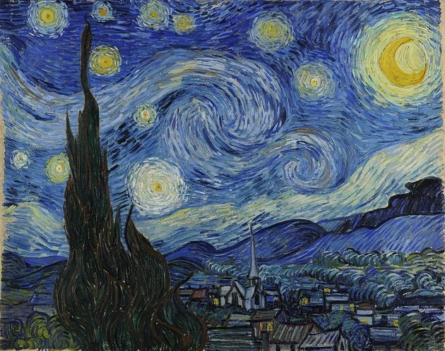
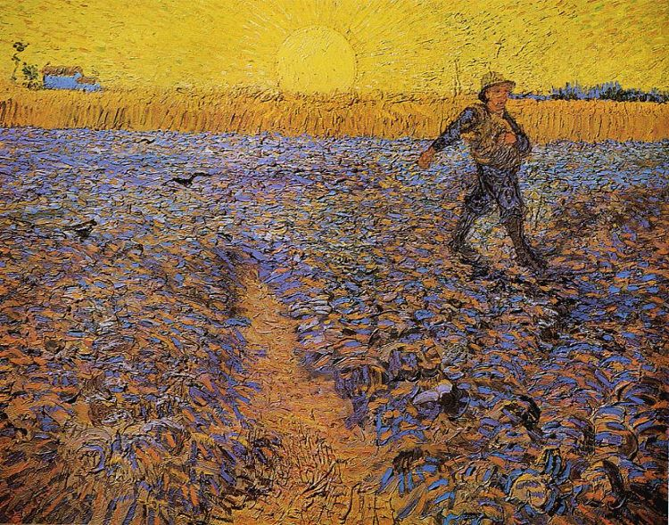
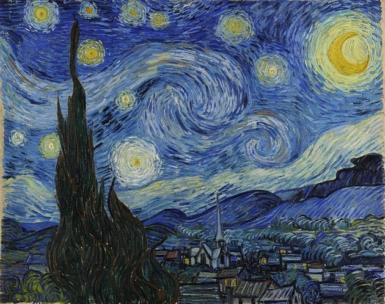
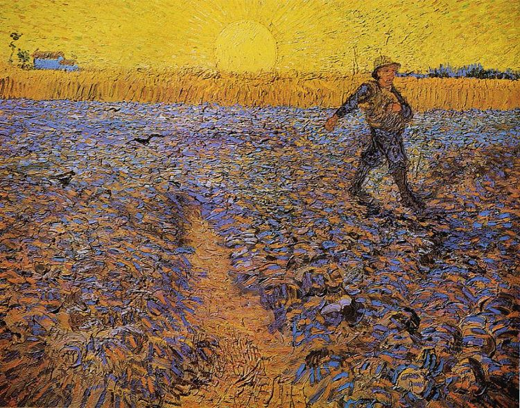

LA NOCHE ESTRELLADA

AUTORRETRATO

EL CAFE DE NOCHE

ALMENDRA EN FLOR

Van Gogh nació en 1853 y creció en Holanda. Fue criado en una familia religiosa con su padre siendo un ministro. Cuando terminó sus estudios, Vincent siguió la profesión de su tío y se convirtió en un comerciante de arte aprendiendo el comercio en Holanda y luego trabajando en Inglaterra y Francia. Vincent tuvo éxito e inicialmente fue contento con su trabajo. Sin embargo, pronto se cansó de la empresa de arte, especialmente en París, y perdió interés en el comercio. Después de regresar a casa, Vincent comenzó estudiar teología. Si bien muy apasionado y entusiastico, él falló los exámenes para entrar en un par de programas. En 1880, a 27 años de edad, Van Gogh entró en el Académie Royale des Beaux-Arts en Bruselas, Bélgica. Al año siguiente, Vincent se trasladó a París donde su arte comenzó a tomar el estilo que le haría famoso. Uno de los sueños de Van Gogh como artista fue la de iniciar una colonia de artistas en Arles, en el sur de Francia. Vincent se trasladó a Arles donde fue acompañado por Gauguin. Una vez allí, Van Gogh entró en el período más productivo y creativo de su vida a pintar su famoso Girasoles. Sin embargo, también fue una época de gran agitación por Vincent comenzando un período de estancia en el hospital para enfermedades mentales y deterioro físico. Después de tan sólo diez años de pintura y producir unas 900 pinturas, Vincent van Gogh se quitó la vida en 1890.
|

LA NOCHE ESTRELLADA |
AUTORRETRATO |
EL CAFE DE NOCHE |
ALMENDRA EN FLOR |

EL SEMBRADOR |